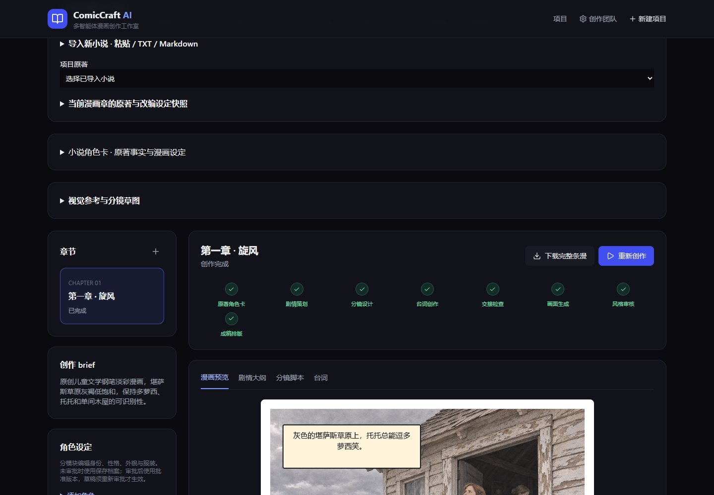
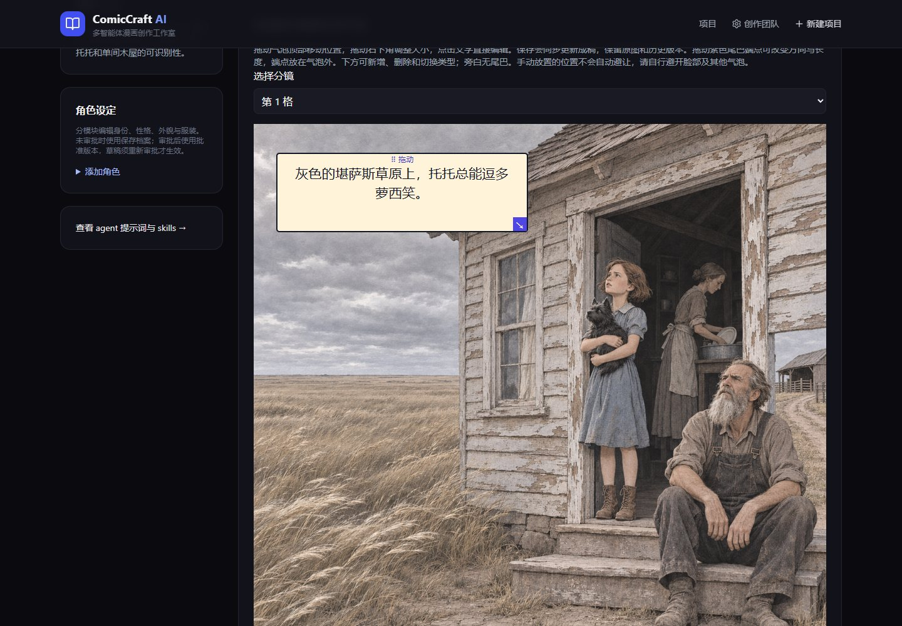
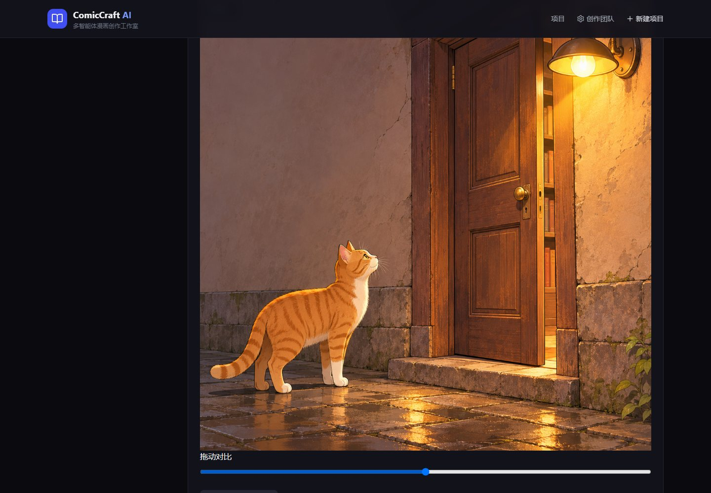
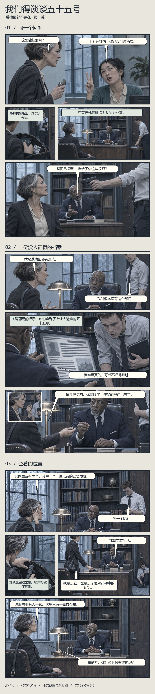

开源漫画创作工作室
从小说
到可编辑漫画
角色、分镜、画面、气泡与版本。

01 / 07
01 / 原著改编
先读原著
再画角色
提取角色卡和故事节拍，确认改编方向。

02 / 07
02 / 分镜审阅
看清镜头
再开始绘图
安排主格、嵌入特写和对白留白，逐格绑定参考。

03 / 07
03 / 画内排字
对白就位
拖动气泡、调整尾巴、编辑文字，直接重排。

04 / 07
04 / 定向修订
只改需要
调整的地方
圈选局部精修，比较候选并保留历史版本。

05 / 07
05 / 漫画成稿
我们得谈谈
五十五号
主格、反应窄格和嵌入特写。原作 qntm · SCP Wiki · CC BY-SA 3.0

06 / 07
COMICCRAFT AI / OPEN SOURCE
现在就能
试改一句对白
在线读漫画 · 试改气泡 · 下载源码seigi-91.github.io/comiccraft-ai/配乐 Dream Culture · Kevin MacLeod · CC BY 4.0
07 / 07